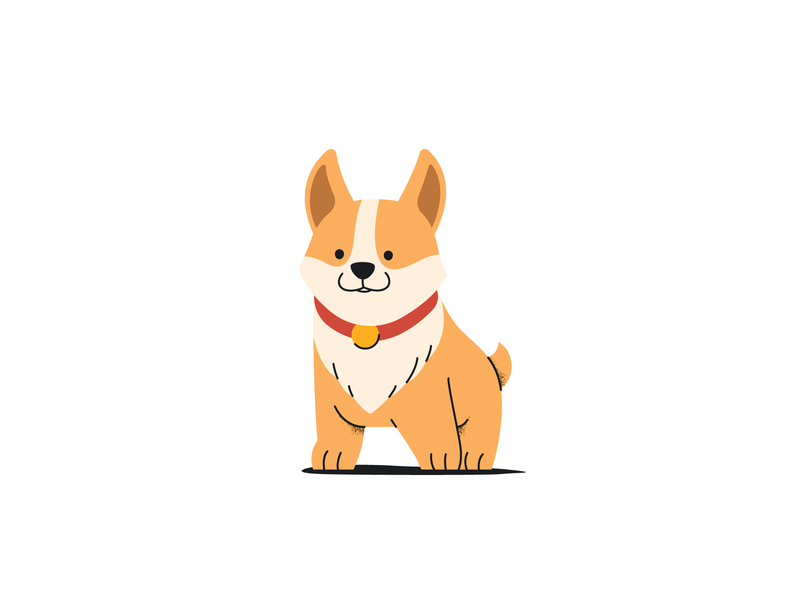

Anybody willing to volunteer some time to walk dogs. It could be for elderly people or someone with work commitments i.e. Drs & Nurses for example.
The goal is to connect dog owners with volunteers who are willing to walk their dogs in times when they themselves cannot.
Dog owners and volunteers can register their interest on the registration page.